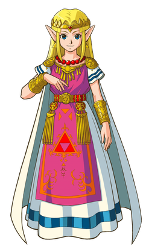
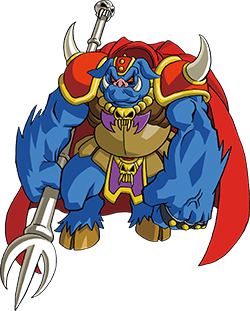

Overview
The Legend of Zelda[a] is a high fantasy action-adventure video game franchise created by Japanese game designers
Shigeru Miyamoto and Takashi Tezuka. It is primarily developed and published by Nintendo, although some portable
installments and re-releases have been outsourced to Capcom, Vanpool, and Grezzo. The gameplay incorporates
action-adventure and elements of action RPG games.
The series centers on the various incarnations of Link, a courageous young Hylian man, with pointy, elf-like ears;
and Princess Zelda, a magical princess that is the mortal reincarnation of the goddess Hylia; as they fight to
save the magical land of Hyrule from Ganon, an evil warlord turned demon king, who is the principal antagonist of
the series. Ganon wishes to use the Triforce, a sacred relic left behind by the three goddesses that created
Hyrule to remake the world in his own dark image. When gathered together, the power of the Triforce can grant any
wish its user desires; however, if someone with a heart that does not possess a balance of the three virtues of
Power, Courage and Wisdom attempts to touch the Triforce, it will split into three triangles and bond with three
people whose hearts embody the required virtue.
Go Home
Characters
Link

The central protagonist of The Legend of Zelda series, Link is the name of various young male Hylians who
characteristically wear a green tunic and a pointed cap, and are the bearers of the Triforce of Courage. In most
games, the player can give Link a different name before the start of the adventure, and he will be referred by
that given name throughout by the non-player characters (NPCs).
Princess Zelda

Princess Zelda is the princess of Hyrule and the guardian of the Triforce of Wisdom. Her name is present in many
of her female ancestors and descendants. While most games require Link to save Zelda from Ganon, she sometimes
plays a supporting role in battle, using magical powers and weapons such as Light Arrows to aid Link.
Ganon

Ganon, also known as Ganondorf in his humanoid form, is the main antagonist and the final boss in the majority
of
The Legend of Zelda games. In the series, Ganondorf is the leader of a race of desert brigands called the
Gerudo,
which consists entirely of female warriors save for one man born every one hundred years. He is significantly
taller than other human NPCs, but his looks vary between games, often taking the form of a monstrous
anthropomorphic boar.
Go Home
History
2D origins (1986 - 1993)
The Legend of Zelda, the first game of the series, was first released in Japan on February 21, 1986, on the
Famicom Disk System.
Transition to 3D (1998 - 2002)
After five years without a new game, the series made the transition to 3D with Ocarina of Time for the Nintendo
64, which was released in November 1998.
Go Home